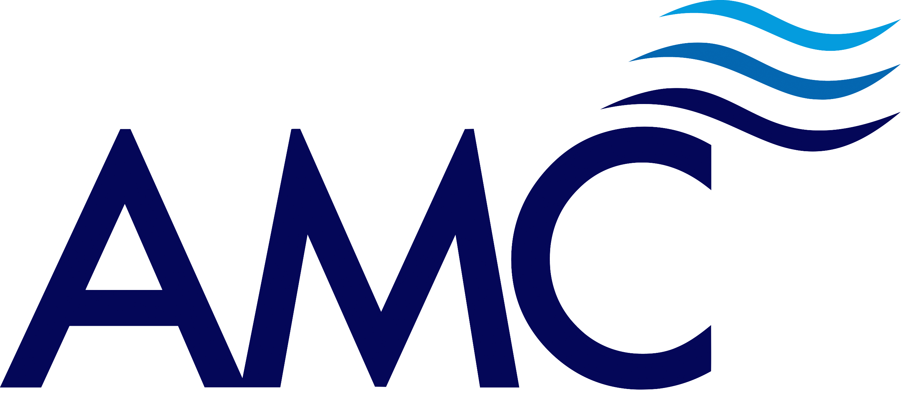

About Me
Nabhan is a Chartered Naval architect with six years of industry experience in ship design, classification, construction, and inspection.
He has worked in both Classification Society and Consultancy positions. Nabhan has expertise in risk and engineering-based assessment of ship structures, having been involved in ship repair and shipbuilding for commercial, FPSO, military and para-military ships of various types, sizes, and conditions.
He is also a sailor and has been sailing and representing Labuan FT since he was ten in Optimist and Laser class.
| YEAR | COURSE | INSTITUTE | |
|---|---|---|---|
| 2012 | Foundation Studies Program (Engineering) | University of Tasmania | |
| 2013 | Bachelor of Engineering in Naval Architecture with Honours | Australian Maritime College |  |
| 2017 | Master of Engineering Management | RMIT University |  |
| 2021-Present | Doctor of Business Administration | Universiti Utara Malaysia |  |

_001.png)